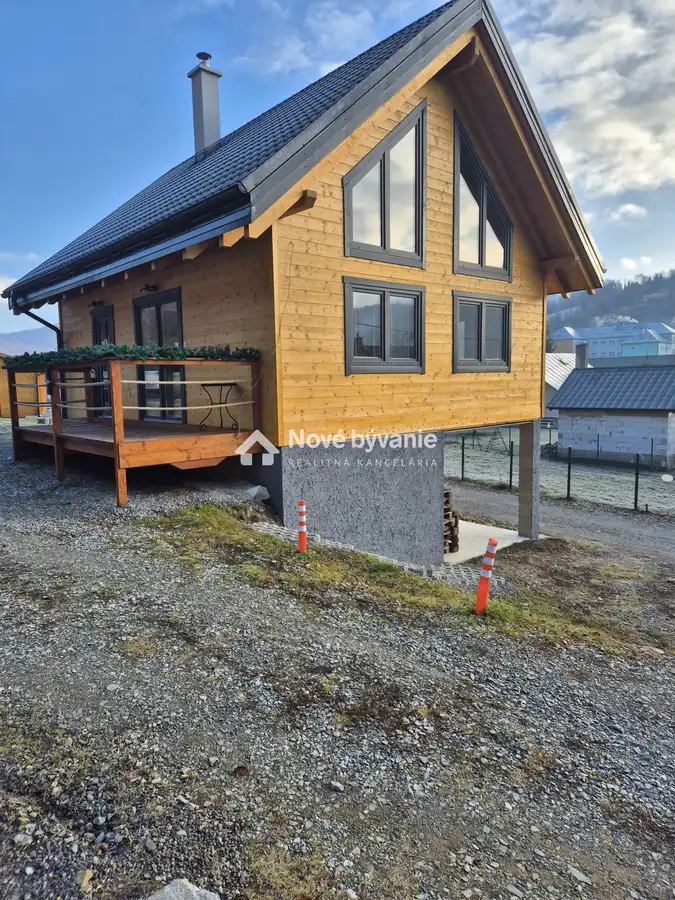
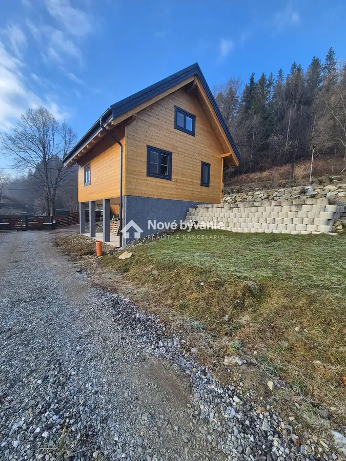
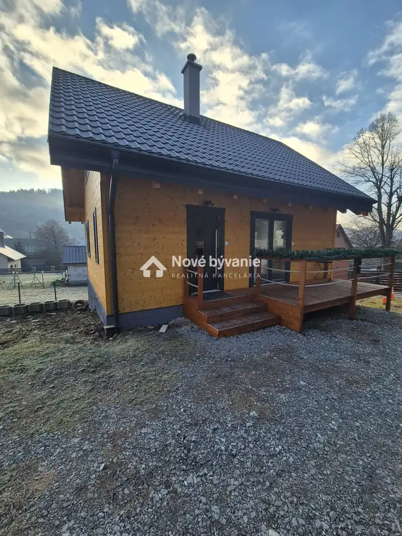
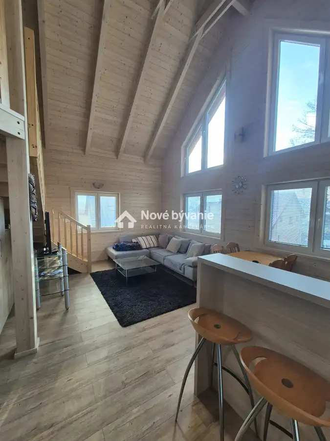
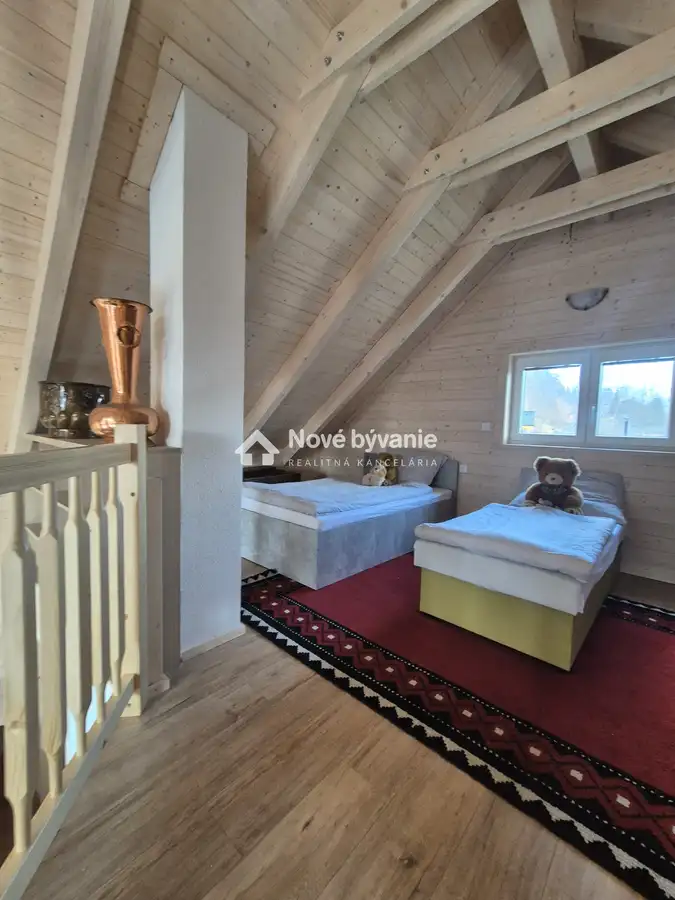
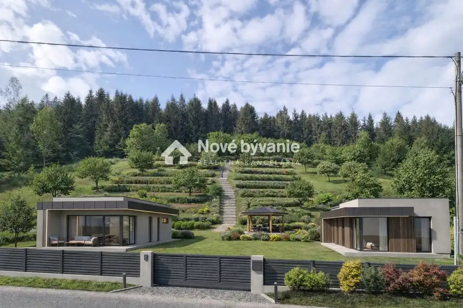
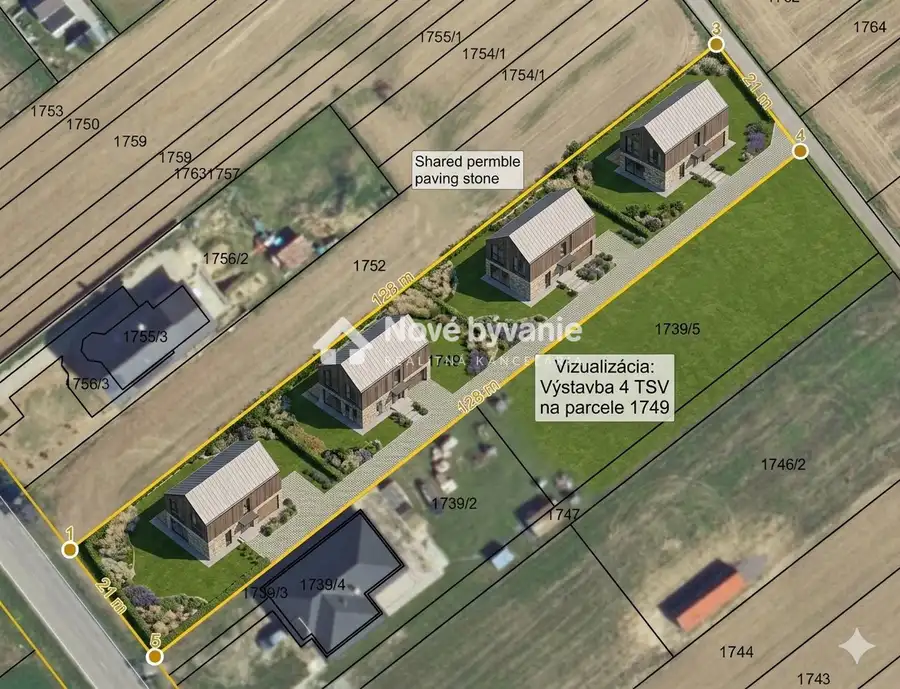
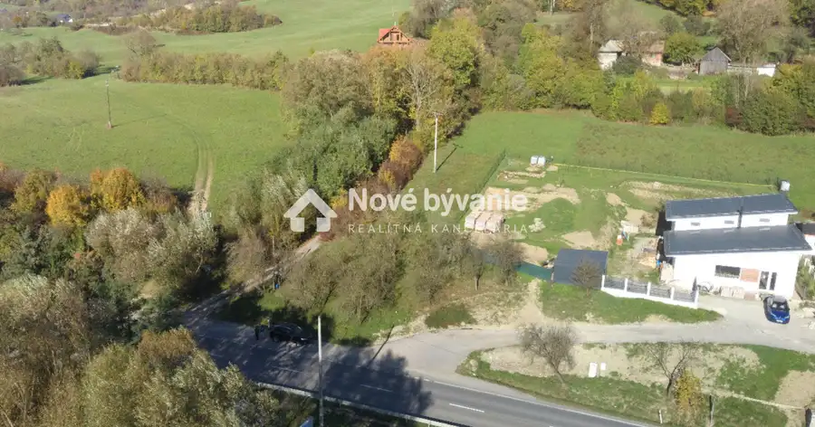

Prenájom: TOP Novostavby, Oščadnica, okr. Čadca
Oščadnica





- Plocha80 m²
- StavNovostavba
- VlastníctvoOsobné
O nehnuteľnosti
(N008-23-MAKNa)Popis NehnuteľnostiPonúkame na prenájom rekreačnú chatu v obci Oščadnica, pre pracovníkov a firmy. Kto hľadá pre svojich zamestnancov za dobre odvedenú náročnú prácu, adekvátne ubytovanie a oddych v krásnom a príjemnom prostredí, táto možnosť splní všetky jeho očakávania a aj jeho zamestnancov.Jedná sa o novostavbu drevo-domu, ktorá bola skolaudovaná v septembri 2025, zastavaná plocha chaty je 55m².V prízemnej časti chaty sa nachádza: - spálňa s dvojlôžkovou posteľou,- kuchynská časť je vybavená kuchynskou linkou sprislušenstvom, vstavanou elektrickou rúrou, indukčnou varnou doskou, umývačkou riadu, mikrovlnou rúrou, kávovarom, rýchlo-varnou kanvicou, chladničkou, pričom je vytvorený dostatočný priestor na prestravovanie sa 6-tim osobám.- obývacou častou v ktorej sa nachádza sedačka tvaru L, televízor so satelitnou televíziou, Wifi pripojenie na internet,- kúpeľňa so sprchovým kútom a toaletou,- po drevenom schodišti sa dostaneme do otvoreného podkrovia v ktorom je ďalšia miestnosť s troma lôžkami,Vykurovanie je zabezpečené paletovými kachľami, ohrev vody elektrickým bojlerom.V chate je možné ubytovanie 6-tich osôb. Pri vstupných dverách chaty sa nachádza drevená terasa o rozlohe 8 m², ktorá môže poslúžiť na oddych po náročnom pracovnom dni.Na pozemku a prístreškom pod chatou je vytvorené dostatočne miesto na parkovanie viacerých služobných vidiel.Pozemok je riadne oplotený po celom obvode.Majiteľ preferuje prenájom celého objektu s max. počtom 6-tich osôb a minimálne na jeden roka. Nájom je stanovený na 1.500,-€ mesačne vrátené energií.Od samotnej chaty je centrum mesta Čadce vzdialená 9km, Krásno nad Kysucou 7km, Kysucké Nové Mesto 20km., chata sa nachádza v centre Oščadnice 500 m od obecného úradu.Cena : 1.500,-€/mesiac vrátane energií, wifi internetového pripojenia, televízie.Majiteľ požaduje platbu mesačného nájmu vopred + vratný depozit (depozit vo výške dvoj - mesačného nájmu) + rezervačný poplatok za služby realitnej kancelárie vo výške 1.100,-€.Neváhajte ma kontaktovať ohľadom bližších informácií a obhliadky na tel. č. +421 911 389 132. knizka@novebyvaniereality.sk.
Parametre
- Druh
- Rodinný dom
- Dátum zverejnenia
- 20. 12. 2025
- Plocha pozemku
- 0 m²
- Plocha terasy v m2
- 8 m²
- Počet izieb / miestností
- 3
- Počet nadzemných podlaží
- 2
- Stav nehnuteľnosti
- Novostavba
- Telekomunikácie
- Internet
- Typ
- Prenájom
- Typ konštrukcie
- Drevená
- Vlastníctvo
- Osobné
- Vybavenie
- Terasa, Garáž
- Vykurovanie
- Lokálne
- Zariadenie
- Zariadené kompletne
- Úžitková plocha
- 80 m²
Kde to je


Mohlo by Vás zaujímať

PozemokNové 129 900 €Exkluzívne: Stavebný pozemok 3660m², Veľké Rovné, okr. Bytča Veľké Rovné 3660 m²
PozemokNové 219 000 €Exkluzívne stavebný pozemok: 2744m², obec Tuchyňa okr. Ilava Tuchyňa 2744 m²
PozemokNové 45 000 €NOVÁ CENA Stavebný pozemok, 940m², obec Mestečko okr. Púchov Mestečko 940 m²